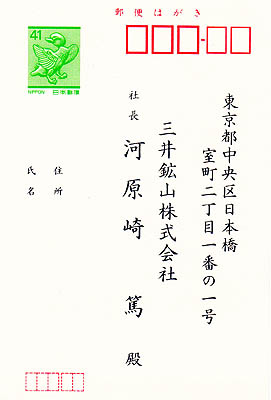
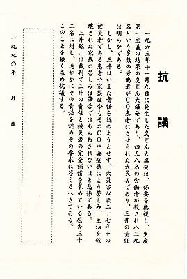

<!DOCTYPE HTML PUBLIC "-//W3C//DTD HTML 4.01 Transitional//EN">
<HTML>
<HEAD>
<META http-equiv="Content-Type" content="text/html>
<META http-equiv="Content-Style-Type" content="text/css" media="all">
<TITLE>みいけ展示室</TITLE>
</HEAD>
<BODY>
<BLOCKQUOTE>
<TABLE>
  <TBODY>
    <TR>
      <TD width="555">
      <P class="MsoNormal" style="text-indent:71.65pt;mso-char-indent-count:4.92"><B style="mso-bidi-font-weight:normal"><FONT color="red" size="+1">展示品</FONT><SPAN lang="EN-US" style="font-size:16.0pt;
mso-font-width:90%"></SPAN></B><BR>
      </P>
      <TABLE>
        <TBODY>
          <TR>
            <TD width="91"></TD>
            <TD width="91"></TD><BR>
            　　　<B>三井鉱山宛て抗議はがき（提供資料）</B><P>
          </TR>
        </TBODY>
      </TABLE>
      <p class=MsoNormal style='text-indent:11.0pt;mso-char-indent-count:1.0;
line-height:17.0pt;mso-line-height-rule:exactly'><FONT face="MS UI Gothic">　「1963年11月9日に発生した炭じん大爆発は、保安を無視し、
生産第一主義の結果の炭じん大爆発であり、458名の労働者が殺され839名という多数の労働者がＣＯ患者にさせられた大災害であり、三井の責任は
明らかである。<BR>
　しかし、三井はいまだ責任を認めようとせず、大災害以来27年その被災者である患者や家族は今もそのＣＯ中毒症状により苦しみ、生活を破壊され
た家族の苦しみは筆舌ではあらわされないほど悲惨である。<BR>
　三井鉱山は裁判で三井の責任と被災者の完全補償を求めている原告32名に対し、速やかにその責任を認めその要求に答えるべきである。<BR>
　このことを強く求め抗議する。　1990年」<BR>
とはがき裏面に記載してある。<spanlang=EN-US style='font-size:11.0pt'></span>
<P>
　先の「原告32名」とは、1987年7月、三池労組主導の三池ＣＯ中毒訴訟原告団が死者400万円の補償で和解案を受け入れた中で、同和解を拒否した
32名(沖克太郎元三池労組組合長ら)のこと。和解拒否派は新しい弁護団と新原告団を結成。これを支援するＣＯ共闘会議が全国に組織された。<BR>
　1993年3月、最初にＣＯ裁判を起こした松尾さんら単独組の判決と共に、先の和解拒否派32名に対する判決が下された。同判決は、三井鉱山の過失責任
を認めるとともに、原告全員をＣＯ中毒後遺症と認定した。しかし、家族に対する慰謝料は認められず、松尾さんら単独組は控訴。一方、和解拒否派32名
は控訴せず、三井側も控訴しなかったことから判決が確定した。
<P>
　先の河原崎篤三井鉱山㈱社長はその後、代表取締役会長となった1994年2月15日、1993年度日本エネルギー学会において「石炭産業ならびに石炭
利用の発展に対する功績」として功績賞（産業部門）を受賞した。
<P>
　なお、2009年4月、三井鉱山㈱は「21世紀においても存在価値のある企業体として人類社会の永続的な発展とよりよい社会環境の構築に貢献」（日本
コークス工業ホームページ）していくとして、日本コークス工業㈱へ商号を変更した。これに伴い、東京・日本橋の三井ビルにあった旧・三井鉱山㈱本
社も、新生・日本コークス工業㈱として豊洲センタービルへ移転した。
</FONT></p>
      </TD>
    </TR>
  </TBODY>
</TABLE>
</BLOCKQUOTE>

</BODY>
</HTML>